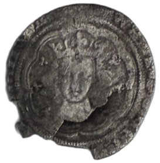
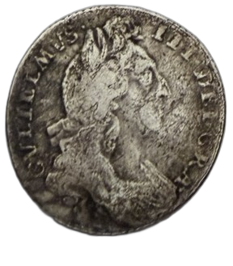
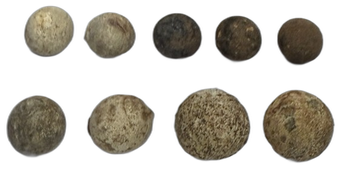

Roman
Roman finds
Coins and objects dating from the Roman period, including a denarius of Commodus from AD 177–192.
Finds
A growing collection of finds recovered by club members, spanning different periods of local history.
This is an early selection. More finds and improved photography will be added as the collection develops.
Roman
Coins and objects dating from the Roman period, including a denarius of Commodus from AD 177–192.

Medieval
Silver coinage and other objects from the medieval period, including an Edward III groat.

Tudor
Hammered coinage and objects from the Tudor period, including an Elizabeth I coin dated 1573.

17th century
Finds from the later 17th century, including a William III silver sixpence.

Everyday objects
Objects that reflect everyday rural life, including copper-alloy crotal bells once used on animals, harnesses or carts.

Military
Lead shot and other finds associated with historic firearms and military activity.